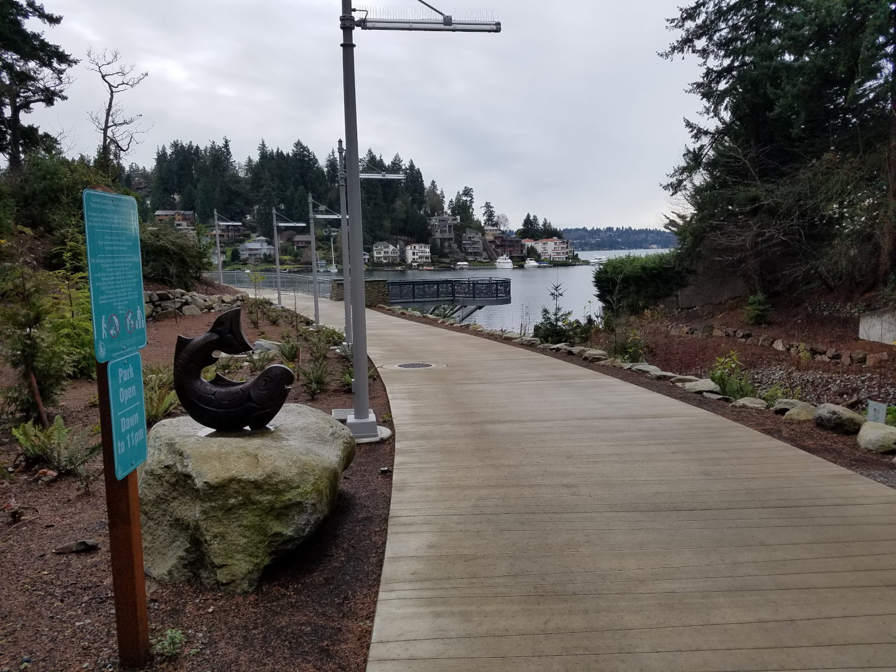
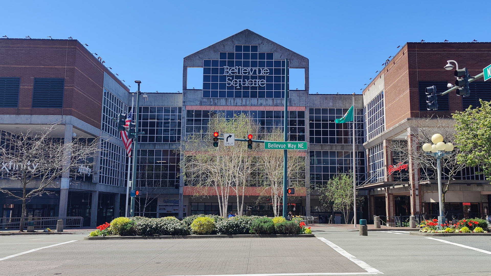
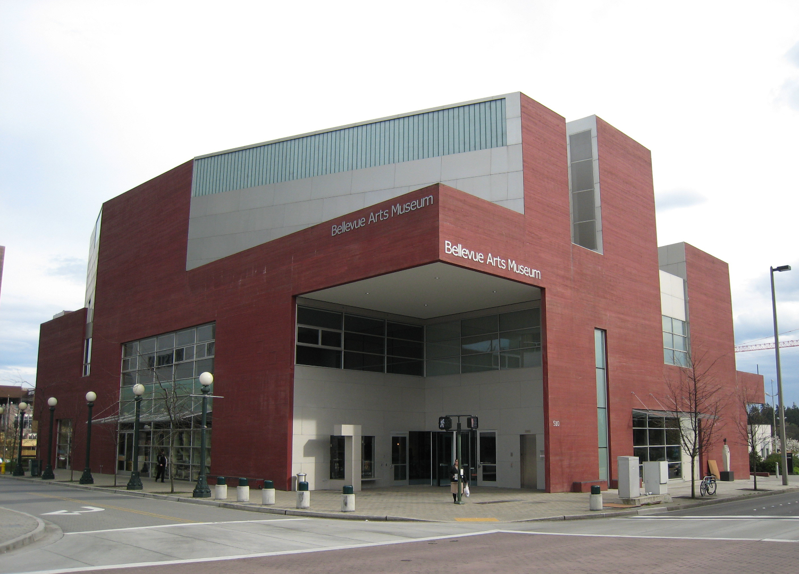
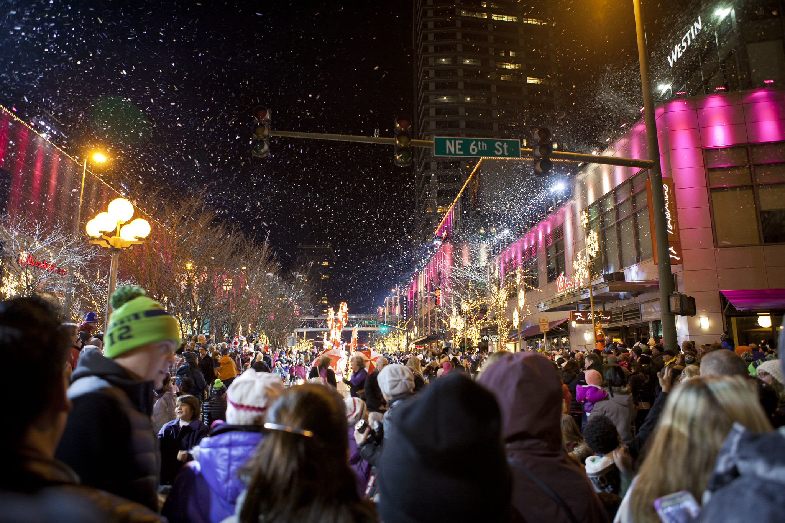

My Favorite City: Bellevue
The Pearl of Washington
Beautiful parks, a vibrant dining scene, safe streets, and a wide variety of shops are defining features of this pristine Eastside city. With plenty of activities, attractions, and culinary experiences, there's something for everything in Bellevue. I recommend attending Snowflake Lane and the Bellevue Arts Fair in particular when they're in season, but regardless of the season, it's difficult to go wrong in this city.
Attractions
Meydenbauer Bay Park
Bellevue Downtown Park often gets the most attention, but just half-a-mile to the west is one of Washington's best waterfront parks. Despite its proximity to the city center, Meydenbauer Bay is very quiet and offers respite from the bustle of downtown. This park was also originally a landing site for passenger ferries between Seattle and Bellevue between the 1890s and 1921. While ferry service has stopped since, seasonal canoe and kayak rentals are available and non-motorized watercraft can be launched here. If you'd happen to own a yacht and would like to park it there instead, you could join the nearby yacht club - but you'll have to join a four year long waitlist.
The Bellevue Collection
It's the quintessential reason "to visit Bellevue:" Bellevue Square. Opened in 1946, Bellevue Square has over 200 retail stores including Macy's and Nordstrom, and is among one of the last privately held malls in the US. Spanning several blocks of downtown, this massive mall has something for everyone. Visitors looking for greater food options can visit nearby Lincoln Square, and luxury hotels and apartments are embedded in Lincoln Square and Bellevue Place. Just don't expect any of this to be easy on your wallet.
Seasonal Fare
Bellevue Arts Fair - Summer
This annual historic arts fair hosted in July is one of Bellevue's core events, and it continues to leave an impact on the region's art scene. Starting as a small parking lot event in the 70s, the fair now spans several city blocks and businesses. More than 350 artists exhibit their works over 20 different mediums, while food trucks, live music, and activities for kids ensure that everybody is happy. It's also responsible for some of my fondest childhood memories.
Snowflake Lane - Winter
Snowflake Lane is Bellevue's most iconic holiday event. Initially created as a small festivity in 2005, it has become a month-long affair with a nightly parade that attracts thousands of people from across the state. 250 cast members performing as elves, drummers, teddy bears, and more march along Bellevue Way underneath the night lights as 55 snow machines drizzle snow onto the crowd. Many Bellevue residents can recall watching the parade and receiving candy as children - me included!